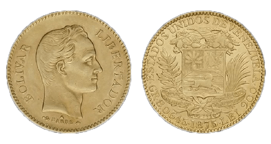
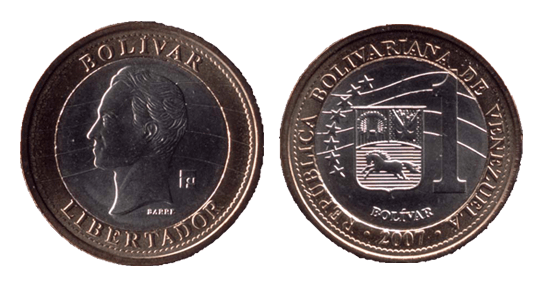
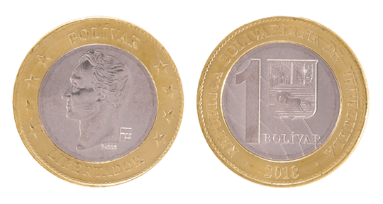

“¡Hay que terminar!”
“You have to finish!” Soccer players with Adidas-striped shoulders shout from the sidelines as their teammates complete a four-on-four drill. The next wave of defenders entering the field cause black turf beads to fly through the Medellín night sky. One, wearing all white save for his neon yellow cleats, slides toward the ball, tripping up the offensive player looking for an open man.
“¡Sigue jugando!”
“Keep playing!” The ball travels like a current between the defender’s feet, and he dribbles it to safety. A whistle signals the end of the play.
The defender, Laurenti Velasquez, jogs off the field, content. When he’s playing soccer, he feels in control—of himself, of his surroundings. Nothing else matters. Not the anger he feels knowing his children are 900 miles away. Not the sadness thinking about the empty-shelved supermarkets in his home country. Not Venezuela’s unfathomable 10 million percent inflation rate that climbs higher daily.
But when he leaves the field, everything comes back. TK. TK. The home he left behind. The 25-year-old immigrated to Colombia in 2016, but he thinks about Venezuela every day. He has to. His two children, 3 and 5, are still there, and so is his mother. Every month, he sends 380,000 pesos ($119) to his children, about 40 percent of his salary.
Hundreds of thousands of Venezuelans share Velasquez’s story. In the last five years, inflation has risen from 57 percent to 10 million percent, causing more than 3 million Venezuelans to flee the country. Over a third of them are in Colombia. Although over 10 percent of the country has emigrated, the rest remain in Venezuela, unable to pay for groceries, medication and other necessities. Most (get numbers) of them rely on remittances from loved ones. In 2018 alone, economists estimated that Venezuelans living abroad sent more than $1 billion to relatives unable to leave.
Venezuela’s inflation rate has been abruptly rising and falling since the late 1980s. One of the most significant jumps happened in 1989, when the rate increased from 11 percent to almost 85 percent. The country’s GDP was at one of its lowest points, and the government responded by removing gasoline subsidies. Venezuela has the largest oil reserves in the world, and people were used to getting gas for almost nothing. Riots broke out across the country, killing hundreds of people.
Just after former President Hugo Chávez’s election in 1999, the global price of oil increased, bringing trillions of dollars into the country’s treasury. He used the money to fund social programs to provide education, medical services and food for low-income communities. At that point, almost 43 percent of Venezuela’s population was below the poverty line.
The money also paid for Russian weaponry and extremely discounted oil to allies like Cuba. Chávez started a program called Petrocaribe that allowed Caribbean countries to exchange local goods such as bananas and sugar for oil. The money quickly depleted. By the time oil prices plummeted in 2014, Venezuela couldn’t recover.
Venezuelan Bolívar Timeline
The Bolívar is an ever-changing currency
1879
 Bolívar Coins (Bs.)Bolívar
The Bolívar (Bs.) was a stable currency pegged to silver, gold, and the US dollar.
Bolívar
Due to economic inflation, coins and bank notes of larger values had to be issued.
1998
 Bolívar Bank Notes (Bs.)
Bolívar Bank Notes (Bs.)
2008
 Bolívar Fuerte Coins (BsF.)Bolívar fuerte
The Bolívar fuerte (BsF.) replaced the Bolívar, taking off three zeros from the currency. Inflation remained even though the numbers were smaller.
Bolívar fuerte
Economic inlfation strikes again, requiring larger coins and bank notes to be issued.
2016
 Bolívar Fuerte Bank Notes (BsF.)
Bolívar Fuerte Bank Notes (BsF.)
2018
 Bolívar Soberano Coins (BsS.)Bolívar soberano
The Bolívar soberano (BsS.) replaced the Bolívar fuerte and took five zeros off the currency.
Bolívar soberano
The Bolívar soberano is the most recent reissue but due to hyperinflation the currency is virtually worthless.
2019
Bolívar Soberano Bank Notes (BsS.)The country’s central bank stopped releasing economic information such as the inflation rate and public spending in 2014. Now the main legislative body, the National Assembly—controlled by the opposition—publishes data. Venezuela’s GDP has steadily dropped since 2013. By 2017, over 87 percent of the population lived below the poverty line.
President Nicolás Maduro tried to renegotiate international loans in 2017, but U.S. sanctions against the country made it impossible. Venezuela slid further into debt.
In January, National Assembly President Juan Guaidó declared himself interim president after Maduro’s second election was deemed rigged. The U.S., Canada, Brazil and about 50 other countries have recognized Guaidó as president. Russia, China and Cuba still support Maduro.
Today, a box of cereal in Venezuela costs more than the average person’s monthly salary. People can’t afford housing or toiletries. Guaido has tried to import humanitarian aid, but Maduro’s officials at the Colombian border destroyed trucks full of necessities. Maduro labeled the event as an attempt to overthrow his administration.
This featuring a pull quote!
“¡Dale, dale, dale!”
“Go, go, go!” Velasquez stands beside the goal, shifting his weight from one Adidas cleat to the other while he waits for the next rotation in the drill. His coach walks toward the middle of the field, unfazed by the players scrambling for the ball around him. Once he reaches the half field line, he scans the scene in front of him, watching the men for technique.
“Allí está.”
“There it is.” The coach nods, and another whistle ends the drill.